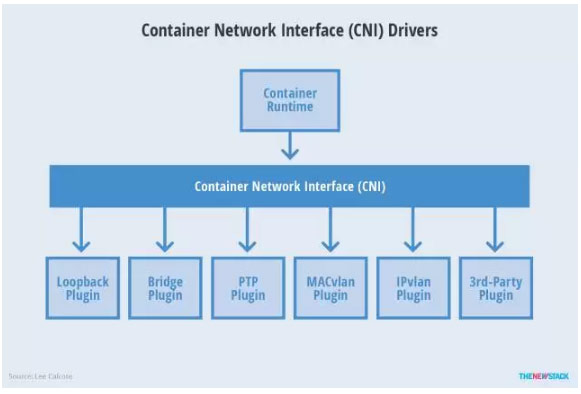
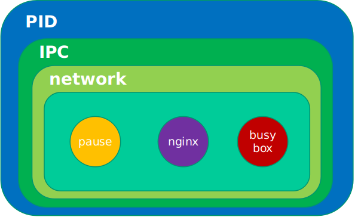
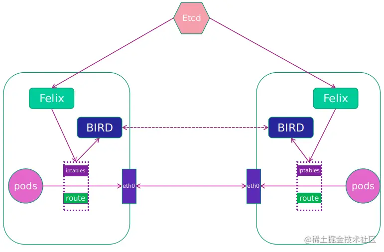

k8s网络之设计与实现
K8s网络设计
- 每个pod都拥有一个独立IP地址，Pod内所有容器共享一个网络命名空间。
- 集群内所有pod都在一个直接连通的扁平网络中，可通过IP直接访问。
- 所有容器之间 无需 NAT（地址转换）就可以之间互相访问
- 所有Node和所有容器之间无需NAT就可以之间互相访问
- 容器自己看到的IP跟其他容器看到的一样
K8s网络要求
- K8s对网络的要求总的来说 有两个：
- 要能够为每一个node上的pod分配互相不冲突的IP地址
- 要所有Pod之间能够互相访问
K8s网络规范
- CNI是由CoreOS提出的一个容器网络规范。已采纳规范的包括Apache Mesos, Cloud Foundry, Kubernetes, Kurma 和 rkt。另外 Contiv Networking, Project Calico 和 Weave这些项目也为CNI提供插件。’

K8s网络实现
- 隧道方案
- 隧道方案在IaaS层的网络中应用也比较多，将pod分布在一个大二层的网络规模下。网络拓扑简单，节点规模增加 会 使得 复杂度增加。
- Weave：UDP广播，本机建立新的BR，通过PCAP互通
- Open vSwitch（OVS）：基于VxLan和GRE协议，但是性能方面损失比较严重
- Flannel：UDP广播，VxLan
- Racher：IPsec
- Calico: IPIP
- 隧道方案在IaaS层的网络中应用也比较多，将pod分布在一个大二层的网络规模下。网络拓扑简单，节点规模增加 会 使得 复杂度增加。
- 路由方案
- 路由方案一般是从3层或者2层实现隔离和跨主机容器互通的，出了问题也很容易排查。
- Calico：基于BGP协议的路由方案，支持很细致的ACL控制，对混合云亲和度比较高。
- Macvlan：从逻辑和Kernel层来看隔离性和性能最优的方案，基于二层隔离，所以需要二层路由器支持，大多数云服务商不支持，所以混合云上比较难以实现。
- flannel :host-gw
- 路由方案一般是从3层或者2层实现隔离和跨主机容器互通的，出了问题也很容易排查。
二层的典型例子是以太网 Ethernet，三层是的典型例子是互联网 Internet。
vxlan 是一种隧道技术，它在你的原始数据包外头包一层 UDP，只要 UDP 数据包能到达的地方，就可以把原始数据包带过去，然后再暴露出来，暴露出来之后可以再由所到主机上的设备进行处理，比如进行路由转发啊，或者其他什么操作。
K8s pod 的网络创建流程
- 每个Pod除了创建时指定的容器外，都有一个kubelet启动时指定的基础容器
- kubelet创建基础容器，生成network namespace
- kubelet调用网络CNI driver，由它根据配置调用具体的CNI 插件
- CNI 插件给基础容器配置网络
- Pod 中其他的容器共享使用基础容器的网络（pause）
pod 内部网络实现

- 多个容器共享同一个底层的网络命名空间 Net（网络设备、网络栈、端口等）
- 同一Node中Pod的默认路由都是docker0的地址
Kubernetes 网络插件Flannel/Calico对比介绍
Flannel
- 网络架构是Kubernetes中较为复杂，让很多用户头疼的方面之一，提起Kubernetes网络架构需要从CNI说起。CNI(Container NetworkInterface)意为容器网络接口，它是一种标准的设计，为了让用户在容器创建或销毁时都能够更容易地配置容器网络。由Google和CoreOS联合定制的网络标准，是Kubernetes网络插件的基础。基于CNI标准，有如下常见的CNI网络插件产品。
简介
Flannel 是coreOS 团队针对Kubernetes 设计的一个网络规划服务。
- 让集群中的不同节点主机所创建的Docker容器都具有全集群唯一的虚拟IP地址。
- 目的就是为集群中的所有节点重新规划IP地址的使用规则，从而使得不同节点上的容器能够获得 “同属一个内网” 且 “不重复的” IP地址，并且让属于不同节点上的容器能够直接通过内网IP通信。
本质是一种 “覆盖网络（overlaynetwork）” 也就是将TCP数据包装在另一种网络包里面进行路由转发和通信。
- 已经支持udp、vxlan、host-gw、aws-vpc、gce和alloc路由等数据转发方式，默认的节点间数据通信方式是UDP转发。
Flannel配置第3层IPv4 Overlay网络。它会创建一个大型内部网络，跨越集群中每个节点。在此Overlay网络中，每个节点都有一个子网，用于在内部分配IP地址。
在配置Pod时，每个节点上的网桥接口都会为每个新容器分配一个地址。同一主机中的Pod可以使用网桥进行通信，而不同主机上的Pod会使用flanneld将其流量封装在UDP数据包中，以便路由到适当的目标。
默认的 Docker 网络配置中，每个节点上的Docker服务会分别负责所在节点容器的IP分配。（不同节点上容器可能出现IP冲突）
特点
- 使集群中的不同Node主机创建的Docker 容器都有全集群唯一的虚拟IP地址。
- 建立一个覆盖网络 （overlay network）,通过这个覆盖网络，将数据包原封不动的传递到目标容器。覆盖网络是建立在另一个网络之上并由其基础设施支持的虚拟网络。覆盖网络通过将一个分组封装在另一个分组内来将网络服务与底层基础设施分离。在将封装的数据包转发到端点后，将其解封装。
- 创建一个新的虚拟网卡flannel0接收docker网桥的数据，通过维护路由表，对接收到的数据进行封包和转发（vxlan）。
- etcd保证了所有node上flanned所看到的配置是一致的。同时每个node上的flanned监听etcd上的数据变化，实时感知集群中node的变化。
几种模式
- Flannel通过在每一个节点上启动一个叫flannel的进程，负责为每一个节点上的子网划分，并将相关配置信息（如各节点的子网网段、外部IP等）保存到etcd中，而具体的网络报文转发交给backend实现。
- flanneld可以在启动时通过配置文件指定不同的backend进行网络通信，目前比较成熟的backend有UDP、VXLAN和host-gateway三种。目前，VXLAN是官方比较推崇的一种backend实现方式。
- UDP模式和VXLAN模式基于三层网络层即可实现，而host-gateway模式就必须要求集群所有机器在同一个广播域，也就是需要在二层网络同一个交换机下才能实现。
- host-gateway一般用于对网络性能要求比较高的场景，但需要基础网络架构的支持；UDP则用于测试及一般比较老的不支持VXLAN的Linux内核。
为什么需要封装呢？
- 因为没有路由，只通过容器IP无法直接发送到对应的容器ip，因此将其封装在node ip 中， 通过UDP的方式传输到目的node中（目的ip通过flannelld 存在etcd中）
Calico 容器网络
- 路由方式：
- BGP：
- 容器到网桥，网桥到node 网卡， node 与node 之间都有路由，一层层路由转发，就不需要进行封装。（目的IP和源IP不变，变得只是mac地址，通过路由器的时候，根据路由表，得到转发的端口（端口对应有一个吗地址），端口再到交换机（源mac+目的mac组成mac头），交换机需要目的地址mac, 因此在路由器上arp 获取 目的ip对应目的mac地址，将包通过交换机目的mac对应的端口发送给目的容器。）
- BGP：
简介

主要工作组件
- Felix： calico的核心组件，运行在每个节点上。主要功能有接口管理，路由规则，ACL规则和状态报告。
- Felix 会监听ECTD中心的存储，从它获取事件，比如说用户在这台机器上加了一个IP，或者是创建了一个容器等。
- 用户创建pod后，Felix负责将其网卡，IP，MAC都设置好，然后在内核的路由表里面写一条，注明这个IP应该到这张网卡。同样如果用户制定了隔离策略，Felix同样会将该策略创建到ACL中，以实现隔离。
网络传输
https://www.zhihu.com/question/21546408
- 路由器每个口都有mac地址
- 在ARP请求传输过程中，不变的是目的IP地址，要用它来找到目的主机，变的是目的mac，需要将数据发送到下一个目的位置
- 路由器根据网络层的地址和路由器内部维护的路由表决定下一跳地址，分组到达路由时，更改链路层MAC帧的报头继续转发。
转载请注明来源，欢迎对文章中的引用来源进行考证，欢迎指出任何有错误或不够清晰的表达。可以在下面评论区评论，也可以邮件至 1065016533@qq.com